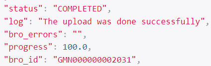

API
De browsable BROSTAR API is te vinden op https://www.brostar.nl/api/ of op https://www.staging.brostar.nl/api/
API Keys
Voor elke request die op de API gedaan wordt, moet een API key gebruikt worden om de gebruiker te authenticeren. Een API key is gebruikersgebonden en kunnen momenteel alleen aangevraagd worden bij Nelen & Schuurmans. Het eigenhandig beheren van API keys in de Api en frontend zal spoedig worden ontwikkeld.
Een request op de BROSTAR API, inclusief een API Key, ziet er als volgt uit:
import requests
from requests.auth import HTTPBasicAuth
BROSTAR_API_KEY = ... # Verberg altijd je API Key!
auth = HTTPBasicAuth(
username="__key__",
password=BROSTAR_API_KEY,
)
url = "https://www.brostar.nl/api/"
r = requests.get(url, auth=auth)
Note
De username in de basic authenticatie is altijd __key__
Endpoints
De API bestaat uit de volgende endpoints:
Authenticatie en authorisatie endpoints:
Functionele endpoints:
Data endpoints:
Organisations
Note
Organisaties kunnen alleen aangemaakt worden door medewerkers van Nelen & Schuurmans. Staat jouw organisatie nog niet geregistreerd? Contact info@nelen-schuurmans.com
Organisaties zijn de basis van het datamodel van de BROSTAR. Elke gebruiker, maar ook elk data object zoals geimporteerde data vanuit de BRO, valt onder een organisatie. Als gebruiker zie je dus alleen de data die onder jouw organisatie valt.
Een organisatie bestaat uit een combinatie van een naam en een kvk nummer. Als je als gebruiker een import taak start, zonder specifiek een kvk nummer op te geven, wordt altijd het kvk nummer van de organisatie waar je onder valt gebruikt in de communicatie naar de BRO. Het is echter mogelijk om een ander kvk nummer op te geven, waarmee je openbare data van andere organisaties kan importeren.
Om het opzoeken van kvk nummers makkelijker te maken, is het mogelijk om alle geregistreerde organisaties in de BROSTAR, inclusief kvk nummer, in te zien. Deze zijn in te zien op het https://www.brostar.nl/api/organisations/ endpoint.
Warning
Om de data in de browsable in te kunnen zien moet een gebruiker ingelogd zijn.
Users
Elke gebruiker krijgt een eigen account op basis van een email adres. Vooralsnog vindt het gebruikersmanagement via Nelen & Schuurmans plaats. Later wordt dit eventueel vergemakkelijkt en in handen van de admins van een organisatie gegeven.
Elk account hangt onder een organisatie.
Op het https://www.brostar.nl/api/users/logged-in/ kunnen user-gegevens ingezien worden.
Importtasks
Import taken zorgen ervoor dat de huidig aanwezige data in de BRO in de BROSTAR database belanden. Deze data is vervolgens in de specifieke endpoints op te vragen.
Import taken vinden plaats op basis van POST requests. In deze request wordt een combinatie van een BRO domein (GAR, GLD, GMW, GMN of FRD) en een kvk nummer meegegeven. Voordat de import start, wordt alle data voor dat domein in de BROSTAR verwijderd. Nadat een taak is geslaagd, is de data in de BROSTAR voor dat specifieke domein dus up-to-date met de BRO.
De data die wordt geimporteerd is slechts de huidige versie van de metadata. Er wordt dus bijvoorbeeld geen geschiedenis van een GMW of de standen van een GLD geimporteerd. Hiervoor kan de BRO zelf bevraagd worden.
Note
De aanwezigheid van de data in de BROSTAR is essentieel voor de frontend om te bestaan. Het kan dus zijn dat je als scripter, die alleen bezig is met het aanleveren van data, geen gebruik maakt van dit endpoint. Toch kan het in sommige gevallen handig zijn. Voorbeelden hiervan zijn om een vertaling van een nitg code naar een BRO id te maken of te controleren of bepaalde objecten reeds aangeleverd zijn.
Hieronder een voorbeeld van een POST request om een GMN import taak voor eigen organisatie te starten:
import requests
from requests.auth import HTTPBasicAuth
BROSTAR_API_KEY = ...
auth = HTTPBasicAuth(
username="__key__",
password=BROSTAR_API_KEY,
)
url = "https://www.brostar.nl/api/importtasks/ "
payload = {
"bro_domain": "GMN"
}
r = requests.post(url, auth=auth, payload=payload)
Uploadtasks
Upload taken zijn dé kracht van de BROSTAR. Het idee achter dit endpoint is dat er slechts JSON opgesteld hoeft te worden om data aan te leveren. Om dit te visualiseren volgt hieronder een code snippet, waarmee een GMN aangemaakt kan worden in de BRO.
import requests
from requests.auth import HTTPBasicAuth
BROSTAR_API_KEY = ...
auth = HTTPBasicAuth(
username="__key__",
password=BROSTAR_API_KEY,
)
url = "https://www.brostar.nl/api/importtasks/ "
metadata = {
"requestReference":"test",
"deliveryAccountableParty":"12345678",
"qualityRegime":"IMBRO"
}
sourcedocument_data = {
"objectIdAccountableParty":"test",
"name":"test",
"deliveryContext":"kaderrichtlijnWater",
"monitoringPurpose":"strategischBeheerKwaliteitRegionaal",
"groundwaterAspect":"kwantiteit",
"startDateMonitoring":"2024-01-01",
"measuringPoints":[
{
"measuringPointCode":"PUT00001",
"broId":"GMW000000000001",
"tubeNumber":"1"
}
]
}
payload = {
"bro_domain": "GMN",
"project_number": "1234",
"registration_type": "GMN_StartRegistration",
"request_type": "registration",
"metadata": metadata,
"sourcedocument_data": sourcedocument_data
}
r = requests.post(url, auth=auth, payload=payload)
De BROSTAR API zal een taak starten waarin 1) een XML bestand wordt aangemaakt, 2) het bestand wordt gevalideerd bij de BRO, 3) het bestand wordt aangeleverd en 4) de voortgang wordt gecontroleerd. De status hiervan wordt bijgehouden in de instantie van de upload taak. Voor elke uploadtaak kan men de volgende eigenschappen inzien om de status bij te houden:

In een post request bestaat de payload uit 6 belangrijke onderdelen:
bro_domain
Het BRO domein bepaalt voor welk type object (GAR, GLD, GMW, GMN of FRD) de data aangeleverd wordt.
project_number
Het BRO project nummer is nodig om data bij de BRO aan te kunnen leveren. Deze kun je in het Bronhouderportaal aanvragen/vinden.
registration_type
Voor elk BRO domein zijn er verschillende type berichten mogelijk. Zo zijn er bijvoorbeeld voor de GMN Startregistration, MeasuringPoint, en Closure als berichten mogelijk.
request_type
Elk registratie type kan op verschillende manieren aangeleverd worden. In principe is de registration de standaardoptie, maar als er data aangepast of verwijderd moet worden, dan zijn respectievelijk de replace en delete requests types beschikbaar. In de BRO catalogus staan alle mogelijke combinaties. Dit zijn de beschikbare request types:
-
registration
-
replace
-
move
-
insert
-
delete
metadata
Voor elke combinatie van registration type en request type wordt achter de schermen een XML bestand opgesteld worden (zie voorbeeld startregistratie GMN). Elk XML bestand begint met metadata, die voor alle berichten hetzelfde zijn. De enige variatie hierin is welke combinatie van waardes meegegeven moet worden. De BROSTAR API ontvangt de metadata JSON en valideert deze met het volgende Pydantic model:
from pydantic import BaseModel
class UploadTaskMetadata(BaseModel):
requestReference: str
deliveryAccountableParty: str | None = None
qualityRegime: str
broId: str | None = None
underPrivilege: str | None = None
correctionReason: str | None = None
dateToBeCorrected: str | date | None = None
Elke metadata moet dus minimaal bestaan uit een requestReference en qualityRegime. Afhankelijk van de combinatie van de registration type en de request type kunnen ook andere benodigd zijn. Om een idee te krijgen van welke data er verwacht wordt, kunnen de XML templates van de BROSTAR gebruikt worden. Deze worden door de API gebruikt om de XML bestanden op te stellen, en zijn daarmee de voorbeelden van welke data er in de metadata wordt verwacht.
sourcedocument_data
De sourcedocument data is de data die benodigd is om de specifieke XML bestanden op te stellen voor elke combinatie van de registration type en de request type. Deze kunnen dus enorm verschillen.
Net zoals de metadata, wordt de sourcedocument data door de API gevalideerd met behulp van Pydantic models.
Tip
Voor simpele eenmalige leveringen kunnen deze worden gebruikt om een JSON samen te stellen. Voor grotere, complexere of operationele leveringen, wordt het aangeraden om de Pydantic models te kopieren in de eigen code.
GMN Startregistratie
from pydantic import BaseModel
class GMNStartregistration(BaseModel):
objectIdAccountableParty: str
name: str
deliveryContext: str
monitoringPurpose: str
groundwaterAspect: str
startDateMonitoring: str
measuringPoints: list[MeasuringPoint]
class MeasuringPoint(BaseModel):
measuringPointCode: str
broId: str
tubeNumber: str | int
GMN MeasuringPoint
from pydantic import BaseModel
class GMNMeasuringPoint(BaseModel):
eventDate: str
measuringPointCode: str
broId: str
tubeNumber: str | int
GMN MeasuringPointEndDate
from pydantic import BaseModel
class GMNMeasuringPointEndDate(BaseModel):
eventDate: str
measuringPointCode: str
broId: str
tubeNumber: str | int
GMN TubeReference
from pydantic import BaseModel
class GMNTubeReference(BaseModel):
eventDate: str
measuringPointCode: str
GMN Closure
from pydantic import BaseModel
class GMNClosure(BaseModel):
endDateMonitoring: str
GWM GMWConstruction
from pydantic import BaseModel
class GMWConstruction(BaseModel):
objectIdAccountableParty: str
deliveryContext: str
constructionStandard: str
initialFunction: str
numberOfMonitoringTubes: str | int
groundLevelStable: str
wellStability: str | None = None
owner: str
maintenanceResponsibleParty: str
wellHeadProtector: str
wellConstructionDate: str
deliveredLocation: str
horizontalPositioningMethod: str
localVerticalReferencePoint: str
offset: str | float
verticalDatum: str
groundLevelPosition: str | float | None = None
groundLevelPositioningMethod: str
monitoringTubes: list[MonitoringTube]
class MonitoringTube(BaseModel):
tubeNumber: str | int
tubeType: str
artesianWellCapPresent: str
sedimentSumpPresent: str
numberOfGeoOhmCables: str | int
tubeTopDiameter: str | float | None = None
variableDiameter: str | float
tubeStatus: str
tubeTopPosition: str | float
tubeTopPositioningMethod: str
tubePackingMaterial: str
tubeMaterial: str
glue: str
screenLength: str | float
sockMaterial: str
plainTubePartLength: str | float
sedimentSumpLength: str | float | None = None
geoohmcables: list[GeoOhmCable] | None = None
class GeoOhmCable(BaseModel):
cableNumber: str | int
electrodes: list[Electrode]
class Electrode(BaseModel):
electrodeNumber: str | int
electrodePackingMaterial: str
electrodeStatus: str
electrodePosition: str | float
GMW Events
from pydantic import BaseModel
class GMWEvent(BaseModel):
eventDate: str
class GMWElectrodeStatus(GMWEvent):
electrodes: list[Electrode]
class GMWGroundLevel(GMWEvent):
wellStability: str | None = None
groundLevelStable: str
groundLevelPosition: str
groundLevelPositioningMethod: str
class GMWGroundLevelMeasuring(GMWEvent):
groundLevelPosition: str
groundLevelPositioningMethod: str
class GMWInsertion(GMWEvent):
tubeNumber: str
tubeTopPosition: str
tubeTopPositioningMethod: str
insertedPartLength: str
insertedPartDiameter: str
insertedPartMaterial: str
class MonitoringTubeLengthening(BaseModel):
tubeNumber: str | int
variableDiameter: str | float
tubeTopPosition: str | float
tubeTopPositioningMethod: str
tubeMaterial: str
glue: str
plainTubePartLength: str | float
class GMWLengthening(GMWEvent):
wellHeadProtector: str | None = None
monitoringTubes: list[MonitoringTubeLengthening]
class GMWMaintainer(GMWEvent):
maintenanceResponsibleParty: str
class GMWOwner(GMWEvent):
owner: str
class MonitoringTubePositions(BaseModel):
tubeNumber: str | int
tubeTopPosition: str | float
tubeTopPositioningMethod: str
class GMWPositions(GMWEvent):
wellStability: str | None = None
groundLevelStable: str
groundLevelPosition: str
groundLevelPositioningMethod: str
monitoringTubes: list[MonitoringTubePositions]
class GMWPositionsMeasuring(GMWEvent):
monitoringTubes: list[MonitoringTube]
groundLevelPosition: str | None = None
groundLevelPositioningMethod: str | None = None
class GMWRemoval(GMWEvent):
pass
class GMWShift(GMWEvent):
groundLevelPosition: str
groundLevelPositioningMethod: str
class MonitoringTubeShortening(BaseModel):
tubeNumber: str | int
tubeTopPosition: str | float
tubeTopPositioningMethod: str
plainTubePartLength: str | float
class GMWShortening(GMWEvent):
wellHeadProtector: str | None = None
monitoringTubes: list[MonitoringTubeShortening]
class MonitoringTubeStatus(BaseModel):
tubeNumber: str | int
tubeStatus: str
class GMWTubeStatus(GMWEvent):
monitoringTubes: list[MonitoringTubeStatus]
class GMWWellHeadProtector(GMWEvent):
wellHeadProtector: str
GAR StartRegistration
from pydantic import BaseModel
class GAR(BaseModel):
objectIdAccountableParty: str
qualityControlMethod: str
groundwaterMonitoringNets: list[str] | None = None
gmwBroId: str
tubeNumber: str | int
fieldResearch: FieldResearch
laboratoryAnalyses: list[LaboratoryAnalysis] | None = None
class LaboratoryAnalysis(BaseModel):
responsibleLaboratoryKvk: str | None = None
analysisProcesses: list[AnalysisProcess] = []
class AnalysisProcess(BaseModel):
date: str | date
analyticalTechnique: str
valuationMethod: str
analyses: list[Analysis]
class Analysis(BaseModel):
parameter: str | int
unit: str
analysisMeasurementValue: str | float
limitSymbol: str | None = None
reportingLimit: str | float | None = None
qualityControlStatus: str
class FieldResearch(BaseModel):
samplingDateTime: str | datetime
samplingOperator: str | None = None
samplingStandard: str
pumpType: str
primaryColour: str | None = None
secondaryColour: str | None = None
colourStrength: str | None = None
abnormalityInCooling: str
abnormalityInDevice: str
pollutedByEngine: str
filterAerated: str
groundWaterLevelDroppedTooMuch: str
abnormalFilter: str
sampleAerated: str
hoseReused: str
temperatureDifficultToMeasure: str
fieldMeasurements: list[FieldMeasurement] | None = None
class FieldMeasurement(BaseModel):
parameter: str | int
unit: str
fieldMeasurementValue: str | float
qualityControlStatus: str
GLD StartRegistration
from pydantic import BaseModel
class GLDStartregistration(BaseModel):
objectIdAccountableParty: str | None = None
groundwaterMonitoringNets: list[str] | None = None
gmwBroId: str
tubeNumber: str | int
GLD Addition
from pydantic import BaseModel
class GLDAddition(BaseModel):
date: str
observationId: str | None = None
observationProcessId: str | None = None
measurementTimeseriesId: str | None = None
investigatorKvk: str
observationType: str
beginPosition: str
endPosition: str
resultTime: str
evaluationProcedure: str
measurementInstrumentType: str
timeValuePairs: list[TimeValuePair]
class TimeValuePair(BaseModel):
time: str | datetime
value: float | str
statusQualityControl: str
FRD StartRegistration
from pydantic import BaseModel
FRD StartRegistration
from pydantic import BaseModel
class FRDStartRegistration(BaseModel):
objectIdAccountableParty: str | None = None
groundwaterMonitoringNets: list[str] | None = None
gmwBroId: str
tubeNumber: str | int
FRD MeasurementConfiguration
from pydantic import BaseModel
class FRDGemMeasurementConfiguration(BaseModel):
measurementConfigurations: list[MeasurementConfiguration]
class MeasurementConfiguration(BaseModel):
measurementConfigurationID: str
measurementE1CableNumber: str | int
measurementE1ElectrodeNumber: str | int
measurementE2CableNumber: str | int
measurementE2ElectrodeNumber: str | int
currentE1CableNumber: str | int
currentE1ElectrodeNumber: str | int
currentE2CableNumber: str | int
currentE2ElectrodeNumber: str | int
FRD EmmInstrumentConfiguration
from pydantic import BaseModel
class FRDEmmInstrumentConfiguration(BaseModel):
instrumentConfigurationID: str
relativePositionTransmitterCoil: str | int
relativePositionPrimaryReceiverCoil: str | int
secondaryReceiverCoilAvailable: str
relativePositionSecondaryReceiverCoil: str | int | None = None
coilFrequencyKnown: str
coilFrequency: str | int | None = None
instrumentLength: str | int
FRD EmmMeasurement
from pydantic import BaseModel
class FRDEmmMeasurement(BaseModel):
measurementDate: date | str
measurementOperatorKvk: str
determinationProcedure: str
measurementEvaluationProcedure: str
measurementSeriesCount: str | int
measurementSeriesValues: str
relatedInstrumentConfigurationId: str
calculationOperatorKvk: str
calculationEvaluationProcedure: str
calculationCount: str | int
calculationValues: str
FRD GemMeasurement
from pydantic import BaseModel
class FRDGemMeasurement(BaseModel):
measurementDate: str | date
measurementOperatorKvk: str
determinationProcedure: str
evaluationProcedure: str
measurements: list[GemMeasurement]
relatedCalculatedApparentFormationResistance: RelatedCalculatedApparentFormationResistance | None = None
class RelatedCalculatedApparentFormationResistance(BaseModel):
calculationOperatorKvk: str
evaluationProcedure: str
elementCount: str | int
values: str
class GemMeasurement(BaseModel):
value: str | int
unit: str
configuration: str
TODO: schrijf docs over check status actions endpoint voor uploadtask instanties. (Als een taak op unfinished staat checkt deze opnieuw de status bij de BRO en updatet evt de status van de upload taak)
TODO: schrijf over xml endpoint
Bulk uploadtasks
TODO
GMNs
TODO
Measuringpoints
TODO
GMWs
TODO
Monitoringtubes
TODO
GARs
TODO
GLDs
TODO
FRDs
TODO